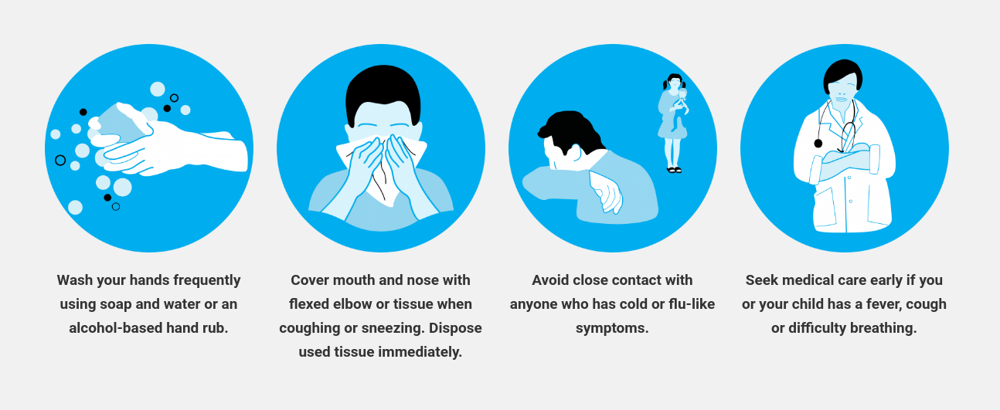

Covid 19 Overview
Coronavirus disease (COVID-19) is an infectious disease caused by the SARS-CoV-2 virus. Most people infected with the virus will experience mild to moderate respiratory illness and recover without requiring special treatment. However, some will become seriously ill and require medical attention. Older people and those with underlying medical conditions like cardiovascular disease, diabetes, chronic respiratory disease, or cancer are more likely to develop serious illness. Anyone can get sick with COVID-19 and become seriously ill or die at any age.
The best way to prevent and slow down transmission is to be well informed about the disease and how the virus spreads. Protect yourself and others from infection by staying at least 1 metre apart from others, wearing a properly fitted mask, and washing your hands or using an alcohol-based rub frequently. Get vaccinated when it’s your turn and follow local guidance.
The virus can spread from an infected person’s mouth or nose in small liquid particles when they cough, sneeze, speak, sing or breathe. These particles range from larger respiratory droplets to smaller aerosols. It is important to practice respiratory etiquette, for example by coughing into a flexed elbow, and to stay home and self-isolate until you recover if you feel unwell.
What is a ‘novel’ coronavirus?
A novel coronavirus (CoV) is a new strain of coronavirus.
The disease caused by the novel coronavirus first identified in Wuhan, China, has been named coronavirus
disease 2019 (COVID-19) – ‘CO’ stands for corona, ‘VI’ for virus, and ‘D’ for disease.
Formerly, this disease was referred to as ‘2019 novel coronavirus’ or ‘2019-nCoV.’
The COVID-19 virus is a new virus linked to the same family of viruses as Severe Acute Respiratory
Syndrome
(SARS) and some types of common cold.
What are the symptoms of coronavirus?
Symptoms can include fever, cough and shortness of breath. In more severe cases, infection can cause
pneumonia or breathing difficulties. More rarely, the disease can be fatal.
These symptoms are similar to the flu (influenza) or the common cold, which are a lot more common than
COVID-19. This is why testing is required to confirm if someone has COVID-19. It’s important to remember
that key prevention measures are the same – frequent hand washing, and respiratory hygiene (cover your
cough
or sneeze with a flexed elbow or tissue, then throw away the tissue into a closed bin).
How can I avoid the risk of infection?
Note: Go here to check cvoid symptoms.
How does the COVID-19 virus spread?
The virus is transmitted through direct contact with respiratory droplets of an infected person (generated through coughing and sneezing), and touching surfaces contaminated with the virus. The COVID-19 virus may survive on surfaces for several hours, but simple disinfectants can kill it.
References:
- https://www.who.int/health-topics/coronavirus
- https://www.unicef.org/india/coronavirus/covid-19